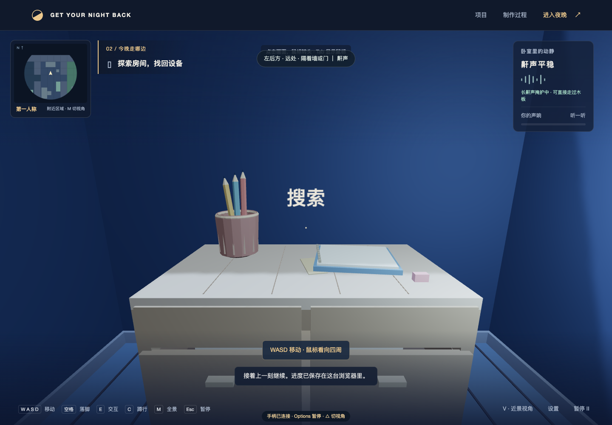

012026.09.09
阅读与核对
阅读与核对
源材料已核对
从生活判断开始，而非从通用玩法开始。
完整阅读 16 节简报、系统图与独立日志协议。确认了“动作产生声音→影响父母警觉→玩家调整行动”的因果链，以及携设备回卧室的成功条件。
也发现体力规则没有定义、喝水量线索没有具体呈现方式。实际文件名与工作簿约定不同，开发副本使用规范名称，桌面原稿保留。
PROCESS / HUMAN × AI
这里记录真实的决定、实现和未解决的问题。生活经验来自学生，AI 参与实现；它们的边界也需要被看见。
完整阅读 16 节简报、系统图与独立日志协议。确认了“动作产生声音→影响父母警觉→玩家调整行动”的因果链，以及携设备回卧室的成功条件。
也发现体力规则没有定义、喝水量线索没有具体呈现方式。实际文件名与工作簿约定不同，开发副本使用规范名称，桌面原稿保留。
学生要求约五分钟体验，授权 AI 设计小地图、候选藏点和父母巡查路线，并直接开发、上线。保留视觉与听觉反馈，不增加复杂外围系统。
AI 根据这次授权暂不加入未定义的体力系统，使用带平滑动画的格点移动；三组挑战合计约五分钟作为目标。这些是 AI 的实现选择，尚需学生试玩判断。
程序化 3D 住宅与卡通角色、落脚指针、可调门速、候选藏点、家具遮挡、父母警觉与巡查、花瓶预警、失败因果回顾和快速重试已接入。声音在浏览器中合成，关键线索均有字幕。
首页、游戏页和本页同步制作。依赖随项目本地构建，所有内部链接和资源均使用相对路径。
15 项规则检查通过。Chrome 实际按键完成三关的搜索与返程，并验证门速、接花瓶、躲藏、持续识别失败和重试；未发现 JavaScript 报错。检查了 1920×1080、1366×768 与窄屏排版。线上公开版本也已通过前两关取物返程、第三关识别失败与重试、首页到过程页跳转检查；线上无资源请求失败或 JavaScript 错误。自动检查不等同于学生试玩。
学生实玩后要求正常游戏菜单、设置、地图选择和续玩，指出 WASD 卡顿、角色风格和镜头距离的问题，并提供 PEAK 角色附件。旧版步间停顿是 AI 的实现选择，已按反馈撤销。
菜单改为 START、挑战关卡、设置；自动保存当前浏览器的进度。普通行走连续推进，初次行动从全景切第一人称，鼠标转头，小地图或 M 切全景。加入分组音量、灵敏度和可选镜头起伏。
使用附件中的第三个角色，通过 Blender 修复贴图并补骨骼；模型来源明确记录为学生提供。首页实景及说明同步更新。
22 项规则与存储检查通过。Chrome 真实按键完成新版三关取物返程，验证开门中途续玩、视角恢复、鼠标控制、地图切换、落脚、躲藏与接花瓶，无脚本报错。约 60Hz 稳定行走每帧推进约 0.0333–0.0342 场景单位，消除了旧版逐格停顿。自动通关不是人类游玩时长测量。发布后在实际 GitHub Pages 地址复测第一关完整返程、开门中途续玩、鼠标与视角、设置保存、选图开局及首页导航；无资源请求失败或脚本报错。
学生认可上一版，并进一步要求更大场景、局部小地图、更短发现反应时间、蹲行和背景音乐。新指令取代此前紧凑住宅与约五分钟范围限制。
住宅加入书房、餐厅、储物间、洗衣间及后走廊；候选藏点为 2 / 5 / 5。小地图只显示附近四格半径。C 可随处切换蹲行，速度与声音降低，仍需真实遮挡。被看见后 0.25 秒识别，起床前仍有五秒预警。
新增原创稀疏拨弦与钟琴夜曲，音乐与提示音独立控制。鼾声、木地板、瓷砖、父母脚步、门轴、碰门与翻找分开制作；危险时音乐降低。
28 项规则检查通过。音频离线渲染检查了音乐与 13 种声音，均有输出且未削波；蹲行和正常推门更轻。Chrome 真实按键完成三关搜索返程，验证蹲行、局部地图、音乐设置、旧存档升级与新进度恢复；无脚本报错。正常行走直接暴露曾失败，改用蹲行与绕路可以完成。公开地址已复测第一关完整搜索返程、两扇门、蹲行存档、局部地图、音乐设置与旧存档迁移，无资源失败或脚本报错。声音测试不能代替学生对音乐和音色的主观体验。
学生要求家长也使用 PEAK 模型，并报告第一人称家长不显示。排查发现原有地面遮挡判断会把家长整个隐藏，即使头部在矮家具上方本应可见。第一人称改用真实三维遮挡，家长换成附件角色的独立克隆，并补充睡姿、巡查动作与手电阴影。
成功落脚此前只播放普通脚步声。现改为松动木板受力轻响、成功落脚短吱声和失误时强吱声，保留原噪声风险差异。
30 项规则检查通过。浏览器定点场景已查看矮家具后露出的家长头部、床上的睡姿及实墙遮挡，并实测木板受力和成功落脚音效。音频渲染验证轻/重吱声均有输出、无削波，失误声更强。正式网址已复测上述显示场景、视角切换与实际落脚音效触发，无脚本错误。
学生指出菜单不够贴合主题、场景不完整、空气墙和不合生活直觉的家具。核对后确认旧模型与整格碰撞分离，部分碰撞点已没有模型，墙顶也未与天花板闭合。
三个入口配上门牌、折叠地图和床头收音机；家具靠墙并按生活用途成组摆放，书桌留在侧墙，避免正对门口。模型、碰撞与小地图共用尺寸和朝向。补齐墙顶、门洞过梁、踢脚线与家具细节。
家长会走到多个地点、停看、推门，再回床边。明显声响可中断巡视或回程，调查最近声源；安静后不继续追踪玩家的新位置。观察时长、路线和摆放为 AI 的实现选择，旧存档保留关卡并按新布置重新开局。
35 项规则检查通过，覆盖家具占地、门板转动、藏点可达、巡查停看与真实回程。Chrome 实际按键完成三关搜索返程；第三关直接返程曾被发现，改为等待巡查经过后可安全回家。检查了第一人称墙顶、门洞、家具摆放、家长起身，以及桌面和窄屏菜单；设置、旧存档迁移与新进度续玩正常，无脚本错误。正式 GitHub Pages 地址已复测第一关完整搜索返程、两扇门、木板声与蹲行，核对三个菜单入口、首页与过程页导航、家长起身和第一人称显示；无资源加载失败或脚本错误。自动通关不等同于人类体验验证。
学生要求表现评分、更真实的门声、与普通地板同色的操作地板、更窄时间区间，以及餐边柜碰掉叉子等慢动作事件。原花瓶是固定地点触发，此次另加入随每局种子固定的搜索概率事件，取消和刷新不重抽。
结算分为任务完成 40、声音控制 25、动作判断 25、避开视线 10；探索和等待不扣分。叉子、笔筒和铁盒有各自近景与落地声音，接物成功后继续搜索。时间区间缩为 22% / 16% / 16%，移除地板特殊颜色与地图标记。门声更换为 laleksic 的 CC0 真实录音切片，来源在音频目录记录。
AI 选择具体权重、概率和近景时长。特写期间玩家不能移动，因此暂缓视线识别；世界仍慢速推进，结束后恢复原识别规则。旧进度兼容，但更新前未记录的表现不会补造。
46 项规则检查通过。三类概率事件与花瓶已经通过真实按键接物、失手、暂停、刷新和搜索恢复检查。录音解码与音量检查完成，发现门锁切片开头近乎无声后调整到机械声段。三关已用真实按键完成搜索与返程，评分卡与行为记录一致；未触发事件没有扣分。窄屏评分卡曾被裁切，已修复并检查实际边界。音频检查覆盖解码、波形和音量，不能代替学生对音色和操作体验的判断。正式网址已复测第一关完整通关与评分、四类接物事件、失手声音、暂停与刷新恢复；六个录音文件正常加载，首页图片与过程页导航正常，无资源失败或脚本错误。
学生要求 USB 连接 PS5 手柄后直接游玩。接入左摇杆模拟移动、右摇杆转头、情境按键、完整菜单导航与设置调节，提示切换为 ×、○、□、△。轻推摇杆慢走，转头速度与死区可独立调整。
断开与失焦时暂停，重连及菜单切换后松开旧输入再继续，避免长按造成误操作。首次识别可能需要在有焦点的页面按一下手柄；浏览器未允许声音时提供一次点击开启提示。
52 项规则检查通过，覆盖死区、模拟幅度、长按、菜单重复、重连、失焦与保存范围。浏览器模拟输入已检查菜单、设置、移动、转头、蹲行、视角、暂停、推门和接物，完整使用模拟手柄完成第一关两扇门、四次落脚、一次接物、搜索返程和评分；没有脚本或资源错误。正式 GitHub Pages 地址已复测菜单、设置、移动与转头、蹲行、视角、断线重连、推门、叉子接物、下一夜和选图开局，无脚本或资源错误。模拟测试不代替实体 DualSense USB 连接与手感测试。
学生要求增加人物外观并在菜单换肤。检查附件后启用螃蟹与厨师两套闲置角色，连同原围巾角色与纸箱、抱枕耳罩、睡帽改装，共六套。基础角色来自学生附件，自制配件与来源分别记录，没有从其他商业游戏提取新模型。
菜单增加衣柜，选择只预览，支持三维旋转与确认穿上，独立保存、不覆盖关卡。外观不改变潜行规则，家长保持原造型；全部直接可选，不新增货币或解锁任务。PS5 手柄可以选择、旋转和确认。
56 项规则检查通过。浏览器检查六套穿戴、预览不自动换肤、刷新保存、关卡进度保持、家长独立外观、手柄导航和桌面／窄屏菜单。修正预览按钮遮脚、缩略图裁帽与小屏提示重叠，新增螃蟹角色已通过模拟手柄完整完成第一关，两扇门、四次落脚、一次接物和返程结算均正常。载入失败重试与快速选择保护也通过检查；正式网址已复查六套模型与卡片加载、换肤保存、继续游戏、家长外观独立、手柄衣柜和桌面／窄屏菜单，无脚本或资源错误。
学生从六项建议中选择第 1、2、3、5 项。新增每夜两张可选便条与线索本、长鼾声和附近洗衣机脱水掩护、可延迟启动的收音机与玩具鸭，以及取物后的来电预警。
线索指向现有藏点；掩护可减轻声响、连续通过松动木板，不能消除视线识别。道具每夜一次，家长调查声源而非玩家的新位置；故意引诱不按声音失误扣分。来电提前 6 秒振动，停下按住 E / □ 1.2 秒静音，移动打断；错过会响铃，但不直接判负。具体时间、范围和文本为 AI 实施选择。
70 项规则检查通过。已检查线索保存、环境范围、家长调查后回房、一次性道具、来电静音与移动打断、旧存档兼容。浏览器已验证键鼠与模拟 PS5 的便条、线索本、道具和静音操作，以及桌面／窄屏界面；新增七种音效有输出且未削波。三关已用真实浏览器按键完成搜索、静音与返程，结算评分与记录一致；修正新道具抢走开门入口、起身期间未更新调查目标及窄屏提示遮挡。正式 GitHub Pages 地址已复测便条与保存、手柄线索本和交互、掩护提示、来电静音与移动打断、错过预警后补救、桌面／窄屏界面，并完成第一关完整搜索、静音和返程。首页、过程页及新增图片已更新，无脚本或资源错误。趣味与实体手柄手感仍需学生试玩评价。
学生要求猫跟随、蹭腿、准备扑花瓶，并提供绕开、安抚和玩具引走。制作原创低多边形橘猫，补上四肢、尾巴、蹭腿、坐下、蓄势和起跳动作，以及猫叫、呼噜和玩具声。
猫共用住宅寻路，绕开家具和关闭的门，不阻挡玩家。E / □ 安抚，Q / R2 投软球；门、柜子和便条优先，避免抢走原有操作。扑花瓶先给 3.5 秒预警，每夜最多一次真正起跳；未阻止时复用接物特写，花瓶从真实位置影响家长。时长、造型和普通猫声不计风险均为 AI 的实施选择。
80 项规则检查通过，覆盖跟随、蹭腿、绕门、安抚、可达玩具落点、预警打断、接花瓶、来源位置、暂停和存档。浏览器已验证键鼠及模拟 PS5 安抚、投球、接花瓶、失手声音与桌面／窄屏界面；三关均已完整完成搜索、手机静音与返程，评分和行为记录一致，无脚本错误。猫的五种新增音效离线输出正常且未削波，精修条纹、转身与特写位置后已复查。正式 GitHub Pages 地址已复测跟随蹭腿、安抚、键鼠与模拟手柄投球、预警打断、接花瓶成功、失手声音、暂停与存档、桌面／窄屏界面；首页实景和说明已更新，无脚本或资源错误。猫的生活感、频率和实体手柄体验仍需学生试玩。
学生要求近景第三人称跟随、三套指定皮肤、解谜后获得线索、具体翻找动画、部分柜锁与三关递进，以及网上现成的猫模型。学生确认奶蛙、奶鼠使用奶白色圆滚滚造型。
增加 V / R3 切换近景、M / △ 全景返回，肩后镜头会避墙。便条排序和谜语完成后才入本；第一关用书签图案，第二关合并两处线索换数字，第三关翻书架获得倒序读法，再开四位锁。抽屉滑出、双手翻找和抽书使用可活动的模型；读题暂停，翻找仍需听动静。以上题目与具体控制为 AI 实施选择。
角色为自制游戏改编，并非下载的官方人物模型；奶龙和奶蛙查阅了全身参考，奶鼠无法确认唯一官方形象，以学生确认的奶白圆滚、大耳鼠造型制作。猫选用 Quaternius CC0 的 Cat Blob，保留骨骼动画并补小脚与尾巴。来源记录公开可查。
86 项规则检查通过。浏览器已检查三关谜题与柜锁、翻书、开锁后翻找与静音、键鼠和模拟 PS5、视角返回、换肤保存与资源加载。发现并修复了第一关旋转书架被错误隐藏、近景人物遮挡和抽屉内部不清楚的问题。公开网址已复查三关谜题与柜锁、翻找、静音、猫、换肤、存档和窄屏页面，无脚本或资源错误。前两关键盘完整通关；第三关实际取得三条线索、开锁并带走手机，几次自动返程路线被巡查发现，尚未完成整局自动通关，不把失败路线写成通过。实体手柄与人类解谜节奏仍待学生体验。
学生要求真实门轴声引导速度，不用数值条提示。核对旧实现发现开门依赖固定正确区间，门尚未开到底也会反复触发撞门声。
改为按住渐进施力、松手即停，PS5 R2 直接读取压深。实际门上的双手、合页轻颤和门缝呈现动作；角度变化带来涩点，轻推不再受最低速度惩罚，字幕只描述声音。特写仍保留正常家长巡查与随时取消，原安静推门评分读取连续摩擦程度。
采用 chonkdonk 的 CC0 门轴实录公开 HQ 试听，剪去空白、调整电平、交叠接续，并随动作改变强弱；开门时音乐降低，松手收声。涩点、施力曲线、特写和声音映射为 AI 实施选择，不冒称真实物理测量。
93 项规则检查通过。浏览器已检查键鼠与模拟 PS5 连续压深、两侧开门、暂停断线收声、保存半开门与窄屏界面。真实录音轻重输出有明显幅度差，交叠段连续、松手后无残余输出，峰值未削波。第一关已用真实键盘完整完成解谜、开门、翻找、静音与返程，获得 100 分，无脚本错误；正式网址已复查键鼠与模拟 PS5、门两侧、暂停断线收声、半开存档恢复、窄屏页面与首页图片，无脚本或资源错误。补丁配平了连续录音接续处的淡入淡出。实体手柄压感与声音能否自然引导判断仍需学生试玩。
按学生要求建立每轮维护的当前状态和长期协作规则。工作简报增加用户确认与 AI 实施选择的区分，并标注旧规则被哪项替代；桌面原始导出稿逐字存档，既有日志与反思保持原样。
本轮只整理文档、修正残留操作说明并增加入口，未改游戏或重跑整局测试。历史验证与未完成项写入当前状态；常规同步直接完成，不再逐次询问。
学生喜欢现有开门玩法，要求增加关门、网上实录与不同地板脚步、声音方位与远近、家长换肤和熟睡挠痒，并结合手柄创意完善花瓶、文具掉落。按四步完成，保留取物返程和声音影响父母。
关门沿用原施力，R / L1 反向；门板碰到角色会停住。核对作者页 CC0，下载木地板原始 WAV、瓷砖和地毯公开 HQ 试听，各裁四个单步；接入随转头变化的方位、距离衰减与隔墙变闷，字幕只描述刚响起的声源。
衣柜分玩家和家长，九套独立保存。熟睡时可在床尾轻挠，缩脚和停鼾提醒收手，持续用力才进入原有起床预警。花瓶双手扶正再放回，铁盒托底压盖，叉子用袖口止响，铅笔按三条滚动路径拦住。具体按键、阈值和造型均为授权内 AI 实施选择，未冒充学生逐项确认。
111 项规则检查与构建通过。Chrome 第一关实际键盘完整解谜、取物、静音、返程，100 分；第二、三关本轮未重跑整局。四种救场用键鼠和模拟双扳机分别完成；关门两侧、半关续玩、挠痒松手／失焦、持物暂停／存档／断线、家长独立换装、桌面与窄屏面板已查，无脚本错误。修正了窄屏面板偏出、工具栏遮挡、衣袖朝向和部分拦笔音量。19 个录音可加载；声道随转头互换、近处约为远处 5 倍、隔墙减弱，实录切片无削波。人类音色和实体手柄未验证，标准震动不等于专有自适应扳机。
用户要求 PS5 自适应扳机与震动，举例门轴发涩、材质落脚、花瓶与铅笔不同接触脉冲，并授权扩展用途。其中走路震动已按后续试玩要求在 v0.14.1 取消，见本页末尾。加入 USB WebHID 扳机阻力；花瓶双手托重与缓放卸力、铁盒压盖、叉子止响、挠痒有独立反馈，手机来电、摸猫与翻抽屉等也有轻重变化。
设置提供主动设备连接、震动与扳机独立强度、短测试及立即停止。普通 Gamepad 震动不能等同自适应阻力；USB 使用一条输出通路，支持条件与真实硬件未测边界写入说明，没有安装本机代理。各曲线和数值为 AI 的实施选择。
124 项自动检查通过，正式构建成功。Chrome 模拟 DualSense/WebHID 检查授权取消／拒绝、USB 报文、门轴施力与松手、四种救场、暂停／失焦／断线、输出回退与桌面／窄屏设置。首轮浏览器发现计时器调用绑定错误，修复后通过。实体 USB 阻力与震动尚未实测；本轮未重跑整局。用户明确要求两轮成果全部公开，已推送游戏提交 0f3bb2f，Pages 构建成功，线上构建与本地一致。公开网址已通过关门、家长换装／挠痒、四种救场、模拟 USB 扳机及震动回退、19 个录音和三页资源检查；无脚本或资源错误。线上定点检查不等同整局或实体手柄测试。
连接步骤、用途与协议来源 ↗用户反馈原自适应扳机已经可用，要求慢速轻响、中速涩响、高速减响但容易撞门，并指出半关门时父母伸手卡住的问题。保留原扳机阻力和松手即停，让开与关共用随真实转速先增后减的摩擦声；只在快速到头时撞门挡／门框，提前收力可避免。
原来的父母开门分支会取消玩家操作，却被自己的身体挡住。改为沿真实可行走路径退出门扇扫掠区，玩家完成／取消后再通行，仍保留防夹、正常视线识别和声音惊动。具体速度插值、阈值和退让路径为 AI 的实施选择，不冒充通用物理定律或用户逐项确认。
门与通行、触觉专项 31 项通过，另有输入、空间音频和家长互动检查通过；Chrome 验证键鼠、模拟 R2／USB 报文、三段摩擦、开关终点撞击、收力、暂停／失焦／断线及窄屏。实际录音离线渲染中速电平约为低／高速的 5 倍，接续连续、松手归零且未削波。不是实体设备或人类听感测试。以上为日志 45 的门轴开发验证，未重跑三关取物返程。之后与机械开锁、掉落动画一并公开为 v0.14，线上结果见下一条。
当前版本与验证边界 ↗用户要求删除旧解谜，参考附图通过机械剖面开锁，让花瓶与文具掉落更有风格。移除便条谜题、线索本和密码门槛，保留柜子位置、取物返程与声音影响父母。
弹簧压缩、接缝对齐与锁芯转动直接呈现操作。第一夜普通弹子，第二夜腰形台肩需要卸力，第三夜过顶会经共用压片带落邻针。键鼠与标准手柄均可操作，暂停、失焦、断线和续玩不误卡针。结构、参数与按键是授权内的 AI 实施选择。
花瓶、小花和铅笔重做为程序模型。失衡、接触下沉、扶正、放回和短回弹连接成连续动作；铅笔沿分路滚出桌沿，结果镜头不重置轨迹。袖口、弯肘手臂、投影和少量动作线加强反馈。救场判定、概率与噪声公式保留。
发布前本地 142 项自动检查通过，正式构建成功。Chrome 三夜机械锁、鼠标拖动、模拟手柄、四种救场、暂停／失焦／断线／存档与桌面／窄屏面板通过。第一夜实际键盘完成开门、机械开锁、取物、静音和返程，100 分，无脚本错误。第二、三夜未重跑完整返程，新增开锁阻力未实体实测。
修正旧锁档重复迁移、花瓶倾角跳变、袖子截面、花朵裁切和开局便条提示。同期门轴修订完整保留，旧评分测试按当前中速涩响更新，没有降低玩法难度。附图只作参考，未导入商业游戏素材。用户明确要求上传，游戏提交 2c50fd0 已公开，Pages 部署成功。线上三夜机械锁、鼠标拖动、模拟手柄、四种救场与暂停／失焦／断线通过；三页及 33 个同站资源均正常，构建与本地一致，无脚本或资源错误。同期门任务也完成公开门轴与通行定点检查。上述 142 项与第一夜通关是发布前本地结果，本轮未重跑整局或连接实体设备。
当前状态与验证边界 ↗用户要求去除走路震动，仅在其他操作时反馈。取消木地板、瓷砖和地毯上的普通走路、蹲行及自动跨板震动，保留脚步声和父母听觉；手动按空格／× 完成落脚时才发独立短脉冲。开关门、开锁、接物及原手机事件反馈继续保留。
61 项相关自动检查与构建通过；Chrome 使用模拟 Gamepad／USB 完成三材质普通／蹲行的 12 组无震动检查，以及门反馈、松手、暂停／续玩、失焦／断线和键鼠切换。无脚本或资源错误。用户随后要求直接上传；独立发布游戏提交 057e1f3，Pages 部署成功。公开网址复测上述触觉与输入通过，三页及 24 个资源正常，游戏构建与本地一致；未发布同期在制模型或门修改，未重跑整局或实测实体手柄。
当前状态与验证边界 ↗用户进一步要求一直最大力气开门会撞框巨响，临近全开时放慢则不会。保留接触瞬间的转速判断，修正实录主峰延迟和反馈偏弱，让撞击声、手部反冲、短震同时发生；最后轻推可以安静停住。
不改变原三段门轴声、R2 涩点阻力和松手即停。掩护继续减弱父母听到的声音，真实物理冲击独立传到玩家手里；门框声不被自己的门扇误遮挡。门扇不反弹穿人，撞后立即恢复移动，父母退让与防夹继续。
45 项相关检查、构建与 Chrome 本地门操作通过；最大 R2 完整开门撞击一次，最后 5% 轻推及键鼠松手短推都不撞。实录主峰约 0.030 秒、峰值约 0.731，无削波；模拟 USB 结束归零，暂停／失焦／断线通过。未实测实体手柄、人类听感或重跑三夜整局；具体参数为 AI 实施选择，用户明确要求直接上传；门修订已单独公开为 v0.14.2，游戏提交 b283943，Pages 成功。公开网址重验键鼠、模拟 R2／USB、完整撞框与末段收力、暂停／失焦／断线通过；三页和 25 个同站资源正常，构建与源码哈希一致，无脚本或资源错误。
当前状态与验证边界 ↗用户指出远近镜头布景不同、接住后只往下放、手臂太长。核对后将住宅、翻找与救场改为共用实际家具和物件；补齐圆垫、餐具格、笔筒内壁、文具与铁盒细节。花瓶／铁盒送回原垫，叉子回格，铅笔转正插回笔筒；手指缩短、固定臂长弯肘。
结果状态保存到远景与续玩，部分拦笔仍按原公式减声。首轮检查修正花朵和笔尖裁切、袖子穿台，以及提前取消铅笔后恢复原摆放的边界。共享构建整合阶段157项通过，最后铅笔修复后23项专项通过；Chrome键鼠／模拟手柄四种救场、暂停续玩、失败恢复与窄屏通过，无脚本或资源错误。未重跑三夜整局或实体手柄，动作自然感仍需用户试玩。用户随后要求直接上传；已在门修订上公开模型成果，游戏提交 a7b64b8，Pages 成功。发布前全套158项通过；线上键鼠／模拟手柄8组接物、暂停续玩、失败保存与窄屏通过。三页和26个同站资源正常，游戏、模型源码及实景图哈希一致，无脚本或资源错误。

用户要求归位摇杆的上下左右对应画面里的模型，并授权完成后直接上传。旧版向下只是推进整段动画，模型反而会上抬、后送。本轮改为四方向控制花瓶和铁盒：向上越过桌沿，左右对准原垫，向下轻放；松杆停止，不再自动横向回中。键盘、方向键和画面按钮同步，宽窄屏补偿透视横漂。
接住、支撑与失衡风险、概率、10 秒上限、噪声和评分保留；叉子／铅笔的自动收回不变。中途旧存档保持可见位置后使用新操作。游戏提交 f4bf373 已公开，Pages 成功。首轮 53 项相关检查、最终 19 项专项与构建通过；最高位置另做 6 组浏览器补验。线上键鼠／模拟标准手柄共 8 组救场、四方向与释放保护通过，三页和 26 个同站资源正常，正式构建及归位源码哈希一致。实体手柄和人类动作体验未由模拟测试代替。
发布与实际验证 ↗用户要求真实声场、隔离与通透／沉闷的区别，并明确确认把声场同步到父母听觉和掩护。墙、木门与家具按频段吸收声音，开口绕传改变方向；加入地面反射与软硬房间的短余响。取消全局掩护、固定半径和人为自身降音量，播放、父母听觉与掩护共用传播模型。
真实录音继续使用已有 CC0 素材，HRTF 跟随转头；具体材质系数与混响时间由 AI 在授权范围内选择。它是轻量几何近似，不是实测房间声场。自动检查和 Chrome 音频／交互结果见项目状态，耳机前后辨位仍需人类试听。
声学依据与实现边界 ↗ · 验证及发布结果 ↗用户反馈木板缺少真实质感、父母脚步难以辨位，鼾声和洗衣声不能直观盖住脚步，并要求完成后直接公开。核对 CC0 许可，下载木板受力声音包的三条录音，加入真实鼾声与脱水声；环境声按原掩护窗口持续播放，适度压低自己的脚步，暂停和醒来及时停止。
父母脚步保留独立音轨，用 HRTF、左右电平差和背后滤波加强转头比较，隔墙仍保留部分细节。采用本帧实际镜头朝向，背景音乐给关键声让位。原掩护范围、父母听觉风险、落脚时机、按键和返程目标不变；具体混音是 AI 实施选择。
45 项相关自动检查、19 组 Chrome 音频渲染与本地／线上各 13 组交互检查通过。游戏提交 43afbb0 已公开，34 个线上文件与发布提交一致，24 个录音可加载；完整范围见项目状态。声道电平、相位同步和无削波可以客观检查，耳机上的自然音色与前后辨位仍须人类试玩，未冒充实体设备听感。
发布与验证结果 ↗ · 素材许可与处理记录 ↗目标是让注意力从指针转向地板、门和父母的动静。学生已指出初版的实际操作问题；新版的手感、第一人称方向感和三关时长仍需学生再次体验，尚未经过人类计时测量。
学生还没有提供阶段反思。本页不会代写学生感受；在学生要求反思时，再保留由学生作答的部分。
按用户两张多视图，在可见 Blender 窗口分阶段制作连续身体、脸、手脚、弯角、耳朵和尾巴，再绑定两套独立骨架。分别保留 30／38 根骨骼和四条自制演示动作；衣柜增加金黄圆肚蛙、金黄小牛，玩家与家长共用十一套外观。
核对渲染后修顺肩部、调整头身与黄色、改为不规则毛纹；解决中文节点与 UV 名称差异、导出混入默认立方体和根骨垂直轴问题。命名、隐藏细节、权重和动作曲线均是 AI 的建模选择，没有把参考图当作官方授权。
源模型、实际 GLB 蒙皮与四条动作检查通过，衣柜分别换装与保存可用。没有实体 USB、三夜整局或用户相似度审定。用户随后明确要求上线，发布及线上验证进度见项目状态；详细验证与源文件见建模说明。
Blender 源文件、预览与来源 ↗